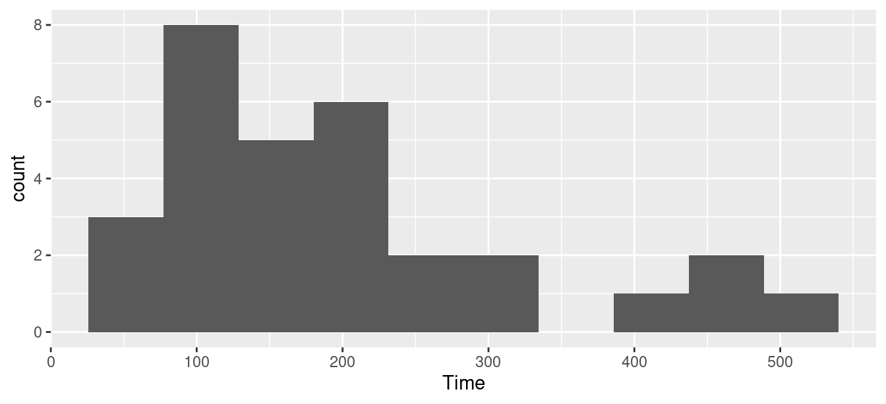

[conflicted] Will prefer dplyr::filter over any other package.
Is my sampling distribution normal enough?
Recall the IRS data that we used as a motivation for the sign test:
ggplot(irs, aes(x=Time))+geom_histogram(bins=10)

We said that a \(t\) procedure for the mean would not be a good idea because the distribution is skewed.
What actually matters
It’s not the distribution of the data that has to be approx normal (for a \(t\) procedure).
What matters is the sampling distribution of the sample mean.
If the sample size is large enough, the sampling distribution will be normal enough even if the data distribution is not.
This is why we had to consider the sample size as well as the shape.
But how do we know whether this is the case or not? We only have one sample.
The (nonparametric) bootstrap
Typically, our sample will be reasonably representative of the population.
Idea: pretend the sample is the population, and sample from it with replacement.
Calculate test statistic, and repeat many times.
This gives an idea of how our statistic might vary in repeated samples: that is, its sampling distribution.
Called the bootstrap distribution of the test statistic.
If the bootstrap distribution is approx normal, infer that the true sampling distribution also approx normal, therefore inference about the mean such as \(t\) is good enough.
If not, we should be more careful.
Why it works
We typically estimate population parameters by using the corresponding sample thing: eg. estimate population mean using sample mean.
This called plug-in principle.
The fraction of sample values less than a value \(x\) called the empirical distribution function (as a function of \(x\)).
By plug-in principle, the empirical distribution function is an estimate of the population CDF.
In this sense, the sample is an estimate of the population, and so sampling from it is an estimate of sampling from the population.
Bootstrapping the IRS data
Sampling with replacement is done like this (the default sample size is as long as the original data):
boot=sample(irs$Time, replace=T)mean(boot)
[1] 202.4667
That’s one bootstrapped mean. We need a whole bunch.
Use the same idea as for simulating power:
rerun(1000, sample(irs$Time, replace=T)) %>%map_dbl(~mean(.)) -> means
Warning: `rerun()` was deprecated in purrr 1.0.0.
ℹ Please use `map()` instead.
# Previously
rerun(1000, sample(irs$Time, replace = T))
# Now
map(1:1000, ~ sample(irs$Time, replace = T))
Rows: 27 Columns: 4
── Column specification ────────────────────────────────────────────────────────
Delimiter: " "
chr (1): line
dbl (3): case, scrap, speed
ℹ Use `spec()` to retrieve the full column specification for this data.
ℹ Specify the column types or set `show_col_types = FALSE` to quiet this message.
Rows: 80 Columns: 2
── Column specification ────────────────────────────────────────────────────────
Delimiter: ","
chr (1): location
dbl (1): traveltime
ℹ Use `spec()` to retrieve the full column specification for this data.
ℹ Specify the column types or set `show_col_types = FALSE` to quiet this message.
# A tibble: 2 × 2
location n
<chr> <int>
1 Ontario 40
2 UK 40
We want to compare the mean journey times in the two different places. This is a two-sample sitation, and if we are not careful with the bootstrap, things will go wrong:
# A tibble: 2 × 2
location n
<chr> <int>
1 Ontario 46
2 UK 34
Our original samples were 40 from each location, but by randomly resampling rows, we probably don’t get 40 from each. We need to draw “stratified resamples” to ensure that we get 40 from each place. This is hard to organize with the build-it-yourself bootstrap. To make things easier, we use the rsample package, but then we have to worry about handling the results.
all of which suggests that the \(t\)-interval for the mean:
with(irs, t.test(Time))
One Sample t-test
data: Time
t = 8.9035, df = 29, p-value = 8.589e-10
alternative hypothesis: true mean is not equal to 0
95 percent confidence interval:
155.0081 247.4585
sample estimates:
mean of x
201.2333
and some kind of bootstrap interval for the mean, say the percentile-based one:
quantile(ddd$the_mean, c(0.025, 0.975))
2.5% 97.5%
159.0658 246.3008
won’t be all that far apart.
How do I get the BCa interval from this output? First write a function that gets the mean Time from given rows of a data frame:
theta <-function(rows, d) { d %>%slice(rows) %>%with(., mean(Time))}irs %>%slice(1:3)
# A tibble: 3 × 1
Time
<dbl>
1 91
2 64
3 243
theta(1:3, irs)
[1] 132.6667
check. And then feed into bcanon these things:
row numbers of data frame that we want to use (all of them)
number of … oh, but this uses the original data, or rows thereof
# A tibble: 2 × 2
# Groups: location [2]
location n
<chr> <int>
1 Ontario 40
2 UK 40
that seems to work, but I want to try it on groups of different sizes
groups <-tribble(~group, ~y,"A", 1,"A", 2,"B", 3,"B", 4,"B", 5)groups
# A tibble: 5 × 2
group y
<chr> <dbl>
1 A 1
2 A 2
3 B 3
4 B 4
5 B 5
groups %>%group_by(group) %>%sample_frac(replace=T)
# A tibble: 5 × 2
# Groups: group [2]
group y
<chr> <dbl>
1 A 1
2 A 2
3 B 4
4 B 3
5 B 4
resample_by_group <-function(d, var, gp) { d %>%group_by({{ gp }}) %>%sample_frac(replace=T)}groups %>%resample_by_group(var=y, gp=group)
# A tibble: 5 × 2
# Groups: group [2]
group y
<chr> <dbl>
1 A 1
2 A 1
3 B 5
4 B 5
5 B 4
second step: difference in means between (evidently two) grooups
mean_diff=function(d, var, gp) { d %>%group_by({{ gp }}) %>%summarize(m=mean({{ var }})) %>%pull(m) -> v v[1]-v[2]}mean_diff(groups, y, group)
[1] -2.5
bootstrap it
rerun(1000, resample_by_group(groups, y, group)) %>%map_dbl(~mean_diff(., y, group)) -> means
Warning: `rerun()` was deprecated in purrr 1.0.0.
ℹ Please use `map()` instead.
# Previously
rerun(1000, resample_by_group(groups, y, group))
# Now
map(1:1000, ~ resample_by_group(groups, y, group))


Comments
This is not so bad: a long right tail, maybe:
or not so much.